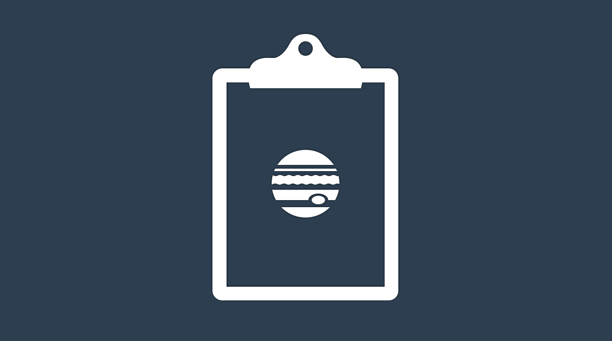

# logger_custom_formatter.py
import logging
from logging import LogRecord
class CustomFormatter(logging.Formatter):
grey = "\x1b[38;20m"
green = "\033[92m"
yellow = "\x1b[33;20m"
red = "\x1b[31;20m"
bold_red = "\x1b[31;1m"
reset = "\x1b[0m"
my_format = "%(asctime)s - %(name)s - %(levelname)s - %(message)s (%(filename)s:%(lineno)d)"
dict_formats = {
logging.DEBUG: grey + my_format + reset,
logging.INFO: green + my_format + reset,
logging.WARNING: yellow + my_format + reset,
logging.ERROR: red + my_format + reset,
logging.CRITICAL: bold_red + my_format + reset,
}
def format(self, record: LogRecord) -> str:
log_format = self.dict_formats.get(record.levelno)
formatter = logging.Formatter(log_format)
return formatter.format(record)
def get_logger(filename: str) -> logging.Logger:
"""logging factory"""
filename = filename.split(".")[-1]
if filename in logging.root.manager.loggerDict:
# avoid logger duplicates
return logging.getLogger(filename)
logger = logging.getLogger(filename)
logger.setLevel(logging.INFO)
ch = logging.StreamHandler()
ch.setLevel(logging.DEBUG)
ch.setFormatter(CustomFormatter())
logger.addHandler(ch)
return logger
This is another blog post aiming at the best approximation of coding best practices I can produce, and it goes beyond the topic of geospatial data science to which this blog is devoted.
Inspired by this stack-overflow question, this blog post delineates how to customise and visualise log messages, and to prompt them into your jupyter notebook cells.
Problem
To see what is happening under the hood, adding print messages in the sourced code, or adding a breakpoint for line-by-line debugging all valid options. At least until the print messages are of general use and the code is intended for production.
When approaching production, print messages are no longer a viable option, but the logging messages taking their place would not be prompted to the jupyter notebook by default. One of my early solutions to this problem was to wrap the python logging library in a custom PrintAndLog class that would prints and log every message.
If this sounded like a terrible idea, it is because it was a terrible idea. Beside the poor design, and the different goals of logging and of printing, it would cause duplicate logs when the code runs on platforms that also logs the printout. Moreover the printed messages would not be associated to any hierarchy level (i.e. DEBUG, INFO, WARNING, ERROR or CRITICAL).
Proposed solution
Following this stackoverflow message and this gist, the proposed solution is a logger factory that wraps logging.Formatter to customise colors and formats, as well as to reduce logger instances duplication.
Now, to have the custom formatter, you can create a logger within the jupyter notebook with:
!export MallocStackLoggingNoCompact=1 # more about this line in the troubleshooting
logger = get_logger(__name__)logger.info("logging some information")2025-07-15 18:53:48,773 - __main__ - INFO - logging some information (2803960019.py:1)logger.error("logging an error")2025-07-15 18:53:48,778 - __main__ - ERROR - logging an error (2599693193.py:1)Without the custom get_logger, logging can be achieved directly with the standard log, still taking care to passing __name__ in the getLogger function, instead of __file__.
import logging
logger = logging.getLogger(__name__)
logger.warning("warning test")Tough this solution would result in a message with identical text formatting as writing print("warning test") in the jupyter notebook.
You can check that the solution works with loggers, creating an external module where to import the logger factory:
# external_module.py
import numpy as np
from logger_custom_formatter import get_logger
logger = get_logger(__file__)
def special_division(a: float, b: float) -> float:
try:
return a / b
except ZeroDivisionError:
if a == 0:
logger.warning("Zero numerator and denominator found. Returning zero")
return 0
if a > 0:
logger.warning("Zero denominator found. Returning + infinity")
return np.inf
else:
logger.warning("Zero denominator found. Returning - infinity")
return -1 * np.infand then calling it from the jupyter notebook check that is correctly raised:
from external_module import special_division
special_division(7, 0)2025-07-15 18:53:48,837 - py - WARNING - Zero denominator found. Returning + infinity (external_module.py:15)infTroubleshooting
If on MAC Sonoma
To allow logs to be shown to jupyter notebooks, you may need to set MallocStackLoggingNoCompact=1. This can be achieved directly within the jupyter notebook with the ! command to call the shell.
!export MallocStackLoggingNoCompact=1If using boto3
If you are using boto3, you can avoid very long and repetitive messages about found credentials with:
import boto3
boto3.set_stream_logger(name="botocore.credentials", level=logging.ERROR)